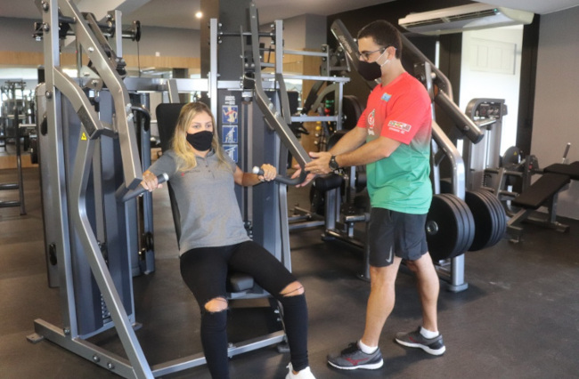
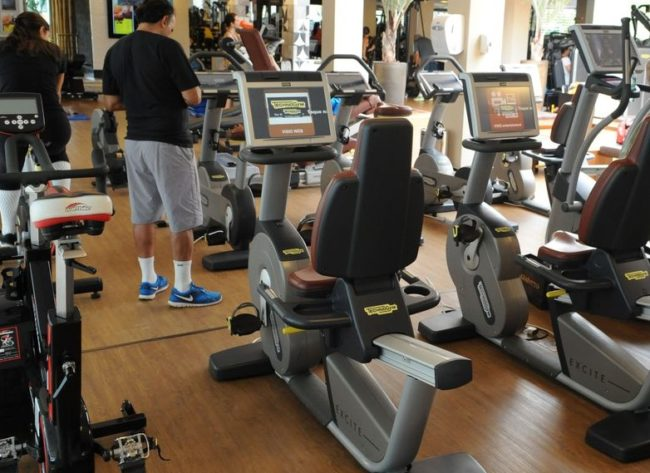

Porque fazer Exercicios?
Praticar exercícios físicos traz grandes benefícios para a saúde. Te ajuda a ter uma vida mais saudável, regrada e garante mais disposição para encarar uma rotina cheia e atarefada. A regularidade nos exercícios é uma prática recomendada pela Organização Mundial da Saúde. Com a intensidade e com a variedade nos exercícios, a chance de ficar doente é menor e gradativamente a chance de viver mais aumenta. Praticar exercícios na academia é algo muito vantajoso, além da estrutura, você tem acompanhamento de um profissional, se integra do ambiente motivador e faz amizades com pessoas com o mesmo intuito que você. Por que praticar exercícios físicos na academia?
Praticar atividades físicas é essencial não só para a estética, é importante para a saúde. Incluir em sua rotina ir à academia, pelo menos três vezes na semana, te ajudará e muito a deixar o sedentarismo de lado e a preguiça também. Não basta só se matricular em uma academia e ir empurrado. É preciso ter convicção de que a verdadeira mudança partirá de você.
É preciso ter foco, dedicação, vontade de mudar e, em hipótese alguma, fique criando desculpas para não começar. Escolher estar em uma academia te ajudará a se inspirar em outras pessoas. Ver o outro fazendo despertará em você o desejo de também não ficar parado. Um ambiente com outras pessoas com o mesmo intuito que você te ajudará a desenvolver um condicionamento físico e manter hábitos ainda mais saudáveis que até então você não tinha.